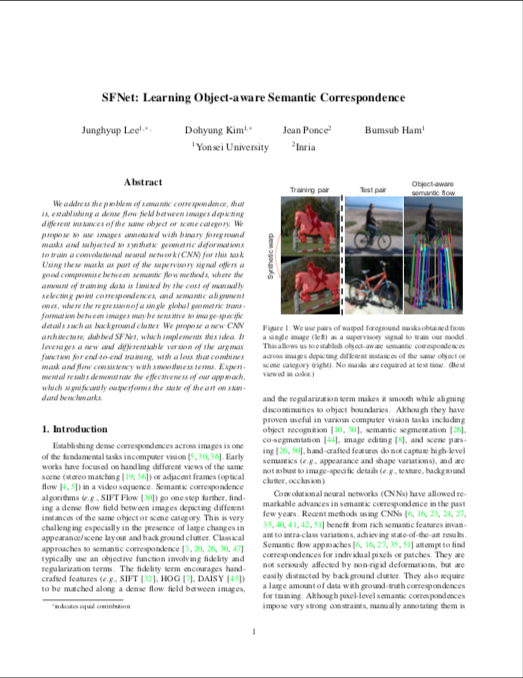

* Both authors contributed equally to this work
We address the problem of semantic correspondence, that is, establishing a dense flow field between images depicting different instances of the same object or scene category. We propose to use images annotated with binary foreground masks and subjected to synthetic geometric deformations to train a convolutional neural network (CNN) for this task. Using these masks as part of the supervisory signal offers a good compromise between semantic flow methods, where the amount of training data is limited by the cost of manually selecting point correspondences, and semantic alignment ones, where the regression of a single global geometric transformation between images may be sensitive to image-specific details such as background clutter. We propose a new CNN architecture, dubbed SFNet, which implements this idea. It leverages a new and differentiable version of the argmax function for end-to-end training, with a loss that combines mask and flow consistency with smoothness terms. Experimental results demonstrate the effectiveness of our approach, which significantly outperforms the state of the art on standard benchmarks.
|  |
I. Rocco, R. Arandjelović and J. Sivic End-to-end weakly-supervised semantic alignment In Proceedings of the IEEE Conference on Computer Vision and Pattern Recognition (CVPR), 2018 [Paper on arXiv] |
@InProceedings{Rocco18,
author = "Rocco, I. and Arandjelovi\'c, R. and Sivic, J.",
title = "End-to-end weakly-supervised semantic alignment",
booktitle = "Proceedings of the IEEE Conference on Computer Vision and Pattern Recognition",
year = "2018",
}
This work has been partly supported by ERC grant LEAP (no. 336845), the Inria CityLab IPL, CIFAR Learning in Machines & Brains program and ESIF, OP Research, development and education Project IMPACT No. CZ.02.1.01/0.0/0.0/15 003/0000468.
The documents contained in these directories are included by the contributing authors as a means to ensure timely dissemination of scholarly and technical work on a non-commercial basis. Copyright and all rights therein are maintained by the authors or by other copyright holders, notwithstanding that they have offered their works here electronically. It is understood that all persons copying this information will adhere to the terms and constraints invoked by each author's copyright.